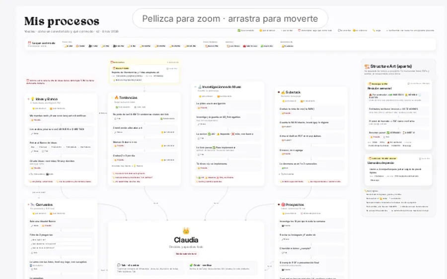
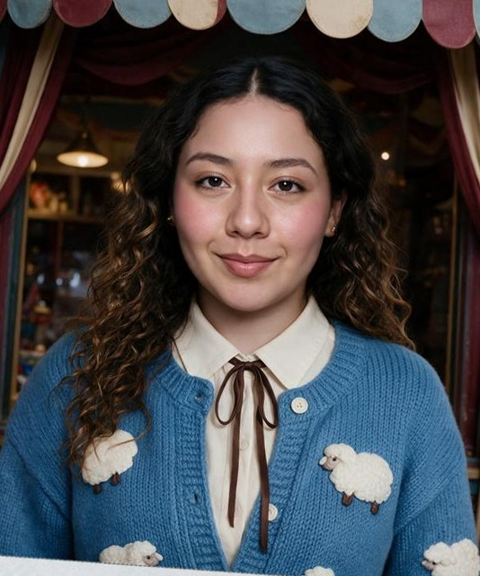
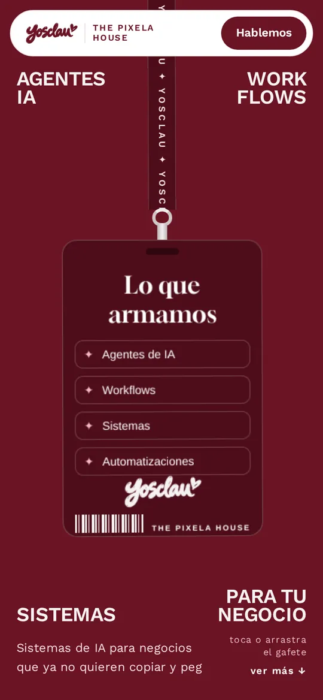
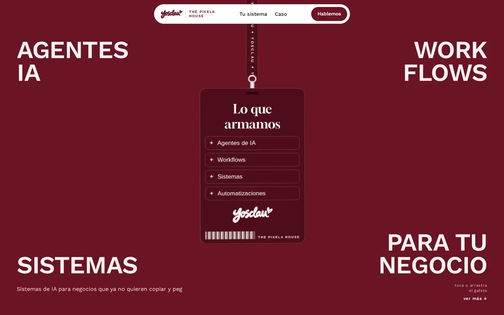

Para negocios
Lo hago yo por ti.
Branding, contenido y sistemas con IA, sin que tengas que aprenderlo todo.
Ver cómo trabajoNuevo 🤖 ¿Buscas IA para tu negocio? Entra a The Pixela House →
Claudia González · Yosclau · Chicago
Diseño marcas, contenido y sistemas con IA.
Con dirección propia.




¿Quién soy?
Mexicana de Campeche. Vivo en Chicago.
Tomo tu idea y le construyo su mundo: estética, personajes e historia. La IA es mi herramienta. La dirección es mía.
Crear no empieza en una herramienta.
Empieza en una posibilidad.
Mi trabajo
Toca una para abrirla. Algunas se están llenando 🌱
Structure Art · cliente real
Identidad completa: logo, paleta negro y dorado, papelería, letrero y anuncios.


Agentes, workflows y sistemas para negocios.
Una sub casa de Yosclau, dedicada a la IA.

Mi mapa de procesos y mi tablero ¿Cómo voy?
Así ordeno ideas, pendientes y proyectos.
📁 Sistemas para clientes · se llena pronto
Más de 100 pósters de estilos y avatares 3D.
Aquí pruebo antes de llevarlo a una marca.


¿Trabajamos juntos? Tu proyecto puede ser el primero de esta carpeta.
Lo que hago
Cómo trabajamos
Para negocios
Branding, contenido y sistemas con IA, sin que tengas que aprenderlo todo.
Ver cómo trabajoPara creativos
Tu marca personal y la IA, paso a paso y sin términos raros.
Agenda tu sesiónContacto
Escríbeme y lo platicamos ✨